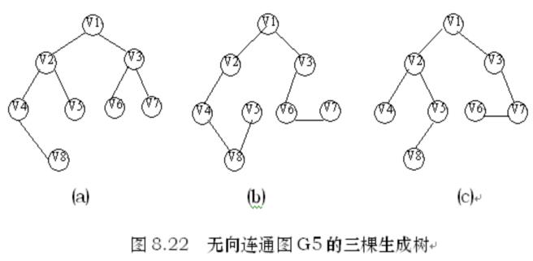
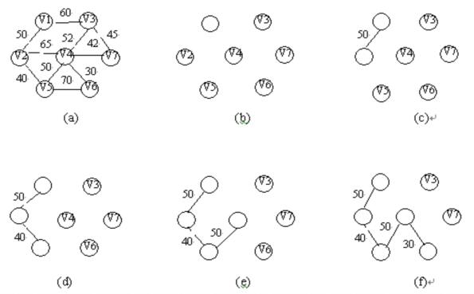
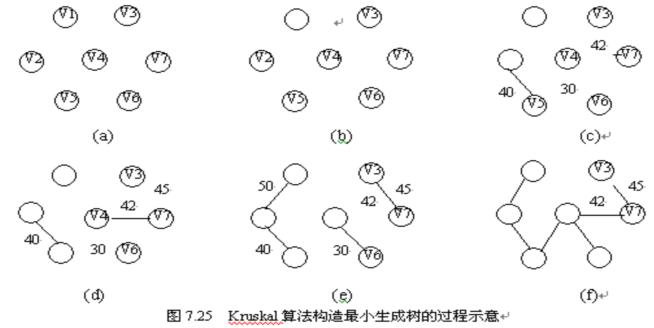

|
|
第七章 图
§7.4 图的连通性问题
判定一个图的连通性是图的一个应用问题，我们可以利用图的遍历算法来求解这一问题。本节将重点讨论无向图的连通性、有向图的连通性、由图得到其生成树或生成森林以及连通图中是否有关节点等几个有关图的连通性的问题。
7.4.1 无向图的连通分量和生成树
1.▲:无向图的连通分量
对于连通图，一次调用DFS或BFS即可遍历图的全部顶点；对于非连通图，多次调用DFS或BFS才能遍历完图的全部顶点。每次调用所得的顶点访问序列就是各连通分量的顶点集。
2.▲:生成树
对于连通图，调用DFS或BFS所经过的边的集合和图的全部顶点构成了图的极小连通子图，即连通图的一棵生成树。由深度优先搜索得到的为深度优先生成树；由广度优先搜索得到的为广度优先生成树。
3.▲:生成森林
对于非连通图，每个连通分量的顶点集和所经过的边一起构成若干棵生成树，这些连通图的生成树构成非连通图的生成森林。
4.▲:重连通图
从一个连通图中删去任何一个顶点及其相关联的边，它仍是一个连通图。
5.▲:关节点
若某连通图的某个顶点和其相关联的边被删除之后，该图被分割成两个或两个以上连通分量，则此顶点为关节点。
可见，没有关节点的连通图称为重（双）连通图。
6、生成森林的算法
void DFSForest(Graph G,CSTree &T)
{T=NULL;
for (v=0;v<G.vexnum;++v)
visited[v]=false;
for (v=0;v<G.vexnum;++v)
if (!visited[v])
{p=(CSTree)malloc(sizeof(CSNode));
*p={GetVex(G,v),NULL,NULL};
if (!T) T=p;
else q->nextsibling = p;
q=p;
DFSTree(G,v,p);
}
}
生成森林的算法
void DFSTree(Graph G,int v, CSTree &T){
visited[v]=TRUE; first=TRUE;
for(v=FirstAdjVex(G,v);w;w=NextAdjVex(G,v,w))
if(!visited[v])
{ p=(CSTree)malloc(sizeof(CSNode));
*p={GetVex(G,v),NULL,NULL};
if (first) { T->lchild=p;first=FALSE;}
else {q->nextsibling=p;
q=p;
DFSTree(G,w,q);
}
}
非连通图的深度优先生成森林
7.4.3 最小生成树
一、问题的提出与解决
由生成树的定义可知，无向连通图的生成树不是唯一的。连通图的一次遍历所经过的边的集合及图中所有顶点的集合就构成了该图的一棵生成树，对连通图的不同遍历，就可能得到不同的生成树。图8.22 (a)、(b)和(c)所示的均为图8.17的无向连通图的生成树。

可以证明，对于有n个顶点的无向连通图，无论其生成树的形态如何，所有生成树中都有且仅有n－1条边。
如果无向连通图是一个网，那么，它的所有生成树中必有一棵边的权值总和最小的生成树，我们称这棵生成树为最小生成树，简称为最小生成树。
最小生成树的概念可以应用到许多实际问题中。例如有这样一个问题：以尽可能低的总造价建造城市间的通讯网络，把十个城市联系在一起。在这十个城市中，任意两个城市之间都可以建造通讯线路，通讯线路的造价依据城市间的距离不同而有不同的造价，可以构造一个通讯线路造价网络，在网络中，每个顶点表示城市，顶点之间的边表示城市之间可构造通讯线路，每条边的权值表示该条通讯线路的造价，要想使总的造价最低，实际上就是寻找该网络的最小生成树。
二、构造最小生成树的构造
1.▲:最小生成树的性质：
假设N=（V，{E}）是一个连通网，U是顶点集V的一个非空子集。若（u,v）是一条具有最小权值（代价）的边，其中u∈U，v∈V-U，则必存在一棵包含边（u,v）的最小生成树。
2.▲:构造最小生成树的Prim算法
假设G＝（V，E）为一网图，其中V为网图中所有顶点的集合，E为网图中所有带权边的集合。设置两个新的集合U和T，其中集合U用于存放G的最小生成树中的顶点，集合T存放G的最小生成树中的边。令集合U的初值为U＝{u1}（假设构造最小生成树时，从顶点u1出发），集合T的初值为T＝{}。
Prim算法的思想是：从所有u∈U，v∈V－U的边中，选取具有最小权值的边（u，v），将顶点v加入集合U中，将边（u，v）加入集合T中，如此不断重复，直到U＝V时，最小生成树构造完毕，这时集合T中包含了最小生成树的所有边。
Prim算法可用下述过程描述，其中用wuv表示顶点u与顶点v边上的权值。
（1）U＝{u1},T={};
（2）while (U≠V)do
(u，v)＝min{wuv；u∈U，v∈V－U }
T＝T＋{(u，v)}
U＝U＋{v}
3.▲:结束
如图所示的一个网图，按照Prim方法，从顶点1出发，该网的最小生成树的产生过程如图7.23 (b)、(c)、(d)、(e)、(f)和(g)所示。
为实现Prim算法，需设置两个辅助一维数组lowcost和closevert，其中lowcost用来保存集合V－U中各顶点与集合U中各顶点构成的边中具有最小权值的边的权值；数组closevertex用来保存依附于该边的在集合U中的顶点。

为实现Prim算法，需设置两个辅助一维数组lowcost和closevert，其中lowcost用来保存集合V－U中各顶点与集合U中各顶点构成的边中具有最小权值的边的权值；数组closevertex用来保存依附于该边的在集合U中的顶点。假设初始状态时，U＝{u1}(u1为出发的顶点)，这时有lowcost[0]=0，它表示顶点u1已加入集合U中，数组lowcost的其它各分量的值是顶点u1到其余各顶点所构成的直接边的权值。然后不断选取权值最小的边（ui，uk）（ui∈U，uk∈V－U），每选取一条边，就将lowcost（k）置为0，表示顶点uk已加入集合U中。由于顶点uk从集合V－U进入集合U后，这两个集合的内容发生了变化，就需依据具体情况更新数组lowcost和closevertex中部分分量的内容。最后closevertex中即为所建立的最小生成树。
当无向网采用二维数组存储的邻接矩阵存储时，Prim算法的C语言实现为：
void Prim（int gm[ ][MAXNODE]，int n，int closevertex[ ]）
{/*用Prim方法建立有n个顶点的邻接矩阵存储结构的网图gm的最小生成树*/
/*从序号为0的顶点出发；建立的最小生成树存于数组closevertex中*/
int lowcost[100],mincost;
int i,j,k;
for (i=1;i<n;i++) /*初始化*/
{ lowcost[i]=gm[0][i];
closevertex[i]=0; }
lowcost[0]=0; /*从序号为0的顶点出发生成最小生成树*/
closevertex[0]=0;
for (i=1;i<n;i++) /*寻找当前最小权值的边的顶点*/
{mincost=MAXCOST; /*MAXCOST为一个极大的常量值*/
j=1;k=1;
while (j<n)
{ if (lowcost[j]<mincost && lowcost[j]!=0)
{ mincost=lowcost[j];
k=j; }
j++; }
printf(“顶点的序号＝%d边的权值＝%d\n”,k,mincost);
lowcost[k]=0;
for (j=1;j<n;j++) /*修改其它顶点的边的权值和最小生成树顶点序号*/
if (gm[k][j]<lowcost[j])
{ lowcost[j]=gm[k][j];
closevertex[j]=k;
} } }
构造最小生成树的Kruskal算法
对于图7.23(a)所示的网，按照Kruskal方法构造最小生成树的过程如图7.25所示。在构造过程中，按照网中边的权值由小到大的顺序，不断选取当前未被选取的边集中权值最小的边。依据生成树的概念，n个结点的生成树，有n－1条边，故反复上述过程，直到选取了n－1条边为止，就构成了一棵最小生成树。
Kruskal算法是一种按照网中边的权值递增的顺序构造最小生成树的方法。其基本思想是：设无向连通网为G＝（V，E），令G的最小生成树为T，其初态为T＝（V，{}），即开始时，最小生成树T由图G中的n个顶点构成，顶点之间没有一条边，这样T中各顶点各自构成一个连通分量。然后，按照边的权值由小到大的顺序，考察G的边集E中的各条边。若被考察的边的两个顶点属于T的两个不同的连通分量，则将此边作为最小生成树的边加入到T中，同时把两个连通分量连接为一个连通分量；若被考察边的两个顶点属于同一个连通分量，则舍去此边，以免造成回路，如此下去，当T中的连通分量个数为1时，此连通分量便为G的一棵最小生成树。

下面介绍Kruskal算法的实现:
设置一个结构数组Edges存储网中所有的边，边的结构类型包括构成的顶点信息和边权值，定义如下：
#define MAXEDGE <图中的最大边数>
typedef struct {
elemtype v1;
elemtype v2;
int cost;
} EdgeType;
EdgeType edges[MAXEDGE];
在结构数组edges中，每个分量edges[i]代表网中的一条边，其中edges[i].v1和edges[i].v2表示该边的两个顶点，edges[i].cost表示这条边的权值。为了方便选取当前权值最小的边，事先把数组edges中的各元素按照其cost域值由小到大的顺序排列。对于有n个顶点的网，设置一个数组father[n]，其初值为father[i]=-1（i＝0，1，…，n－1），表示各个顶点在不同的连通分量上，然后，依次取出edges数组中的每条边的两个顶点，查找它们所属的连通分量，假设vf1和vf2为两顶点所在的树的根结点在father数组中的序号，若vf1不等于vf2，表明这条边的两个顶点不属于同一分量，则将这条边作为最小生成树的边输出，并合并它们所属的两个连通分量。
|
|